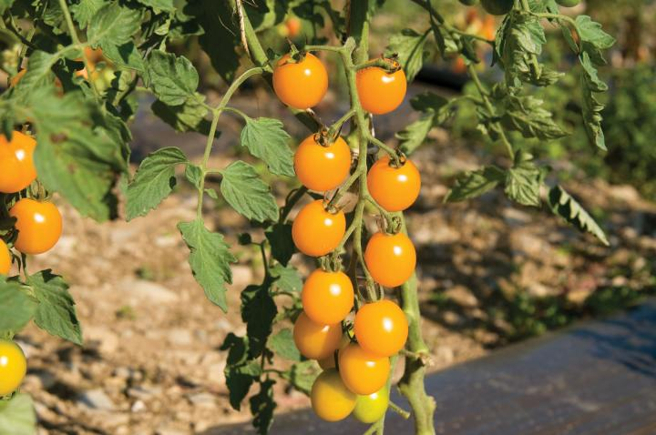

Tomato plants are tender warm-season crops that love the sun and cannot bear frost. It’s important not to put plants in the ground too early. In most regions, the soil is not warm enough to plant tomatoes outdoors until late spring and early summer except in zone 10, where they are a fall and winter crop. See when to start tomatoes for your location.
Tomatoes take 60 days to more than 100 days to harvest, depending on the variety (see more about varieties below). Due to their relatively long growing season requirements (and late planting date), most gardeners plant small “starter plants” or transplants instead of seeds after the weather has warmed up in spring. Many gardeners purchase their transplants at a garden center or nursery but you can certainly grow you own from seed indoors.
A few guidelines on buying transplants:
Choose young tomato plants from a reputable nursery.
Good starter plants are short and stocky with dark green color and straight, sturdy stems about the size of a pencil or thicker.
They should not have yellowing leaves, spots, or stress damage, nor have flowers or fruits already in progress.
Planting
Select a site with full sun! In northern regions, 8 to 10 hours of direct sunlight are preferred. In southern regions, light afternoon shade (natural or applied, e.g., row covers) will help tomatoes to survive and thrive. Dig soil to about 1 foot deep and mix in aged manure and/or compost. Give it two weeks to break down before planting.
Also, choose a space where tomatoes (and members of their family, especially eggplants, peppers, and potatoes) have not grown in the previous couple of years. See tips on crop rotation.
When to Plant Tomatoes
Tomatoes are long-season, heat-loving plants that won’t tolerate frost, so wait until the weather has warmed up in the spring. See our Planting Calendar for when to start tomatoes in your location.
If you are starting tomatoes from seed, sow indoors 6 weeks before the last expected spring frost date in your area. Sow seeds 1/2-inch deep in small trays. Plant seedlings outdoors about 2 weeks after that date or when temperatures stay in the mid-50 degree range both day and night. See our full guide to starting tomato seeds indoors.
If you have a long enough growing season, it is also possible to direct-seed tomatoes in the garden soil (1/2-inch deep)—but not before the soil is at least 55°F. Note that 70°F soil is optimum for maximum germination within 5 days.
Hardening Off Tomatoes
If you’re buying or growing the start plants, you’ll need to “harden off” the seedlings for a week before transplanting them in the ground. Set them outdoors in the shade for a few hours on the first day. Gradually increase this time each day to include some direct sunlight
Transplanting Tomatoes
Transplant your seedlings (or your nursery-grown plants) into the ground outdoors after all danger of frost has passed and the soil is at least 60°F. See our Planting Calendar for suggested transplanting dates.
Place tomato stakes or cages in the soil at planting. Staking and caging keep developing fruit off the ground (to avoid disease and pests) and also help the plant to stay upright. See instructions on how to build stakes, cages, and tomato supports.
Optional: When you transplant tomatoes, add a handful of organic tomato fertilizer or bone meal (a good source of phosphorus) to the planting hole. Do NOT apply high nitrogen fertilizers such as those recommended for lawns, as this will promote luxurious foliage but can delay flowering and fruiting.
When planting seedlings, pinch off a few of the lower leaves. Here are two ways to set seedlings in the soil:
Place each root ball deep enough so that the bottom leaves are just above the surface of the soil. Roots will grow all along the plant’s stem underground. Plant seedlings 2 to 3 feet apart. Crowded plants will not get sufficient sun and the fruit may not ripen.
Alternatively, lay long, leggy transplants on their sides in trenches 3 to 4 inches deep. Bury the stems up to the first set of true leaves. Roots will develop along the buried stem. If you plant this way, consider setting four tomato plants in compass-point positions (north, south, east, west). This formation enables you to fertilize and water the plants in the mid
Remember to allow enough space for the plants to spread out.
Water well to reduce shock to the roots.
Growing Tomatoes in Containers
Use a large pot or container (at least 20 inches in diameter) with drainage holes in the bottom.
Use loose, well-draining soil (e.g., at least 12 inches of a good “potting mix” with added organic material).
A tray of some sort should be placed under the pot to catch any excess water that drains out the bottom.
Choose determinate types, such as bush or dwarf varieties. Many cherry tomatoes grow well in pots. Taller varieties may need to be staked.
Plant one tomato plant per pot and give each at least 6 hours of sun per day.
Keep soil moist. Containers will dry out more quickly than garden soil, so check daily and provide extra water during heat waves.
growing
Water in the early morning so that plants have sufficient moisture to make it through a hotday.
Water generously the first few days that the tomato seedlings or transplants are in the ground.
Then water with about 2 inches (about 1.2 gallons) per square foot per week during the growing season. Deep watering encourages a strong root system.
Avoid overhead watering and afternoon watering. Water at the base/soil level of a plant to avoid splashing water on the leaves (which invites disease).
Mulch 5 weeks after transplanting to retain moisture, keep soil from splashing the lower leaves, and control weeds.Apply 2 to 4 inches of organic mulch such as straw, hay, or bark chips.
To help tomatoes through periods of drought, find some flat rocks and place one next to each plant. The rocks prevent water from evaporating from the soil.
Fertilizing
You should have already worked compost into the soil before planting, and added some bonemeal to the planting hole when transplanting.
Side-dress plants, applying liquid seaweed or fish emulsion or an organic fertilizer every 2 weeks, starting when tomatoes are about 1 inch in diameter (some folks say golf ball-size). If you are using an organic granular formula such as Espoma Tomato-Tone (4-7-10 or 3-4-6), pull mulch back a few inches and scratch 2 to 3 tablespoons fertilizer around the drip line of the plant. Water in, and replace mulch.
Continue fertilizing tomatoes about every 3 to 4 weeks until frost.
Note: Avoid fast-release fertilizers and avoid high-nitrogen fertilizers. As stated, too much nitrogen will result in lush foliage but few flowers and little or no fruit.
Pruning, pinching, staking
If growing vining tomatoes, pinch off suckers (new, tiny stems and leaves between branches and the main stem). This aids air circulation and allows more sunlight into the middle of the plant.
Gently tie the stems to stakes with rags, nylon stockings, twine, or soft string.
As a plant grows, trim the lower leaves from the bottom 12 inches of the stem.
Recommended Varieties
Image: Tomatoes aren’t only red! Featured here is the flavorful heirloom ‘Green Zebra,’ a high-yielding indeterminate plant.
Tomatoes come in a wide range of flavors, as well as colors and sizes, from tiny grape-sized to giant beefsteaks. The choice also depends on how you will use this versatile fruit in the kitchen. For example, Roma tomatoes are not usually eaten fresh out of hand, but are perfect for sauces and ketchups.
Early Varieties (fewer than 70 days to harvest)
Early-maturing cultivars such as Early Girl may be slightly less flavorful but will produce fruit 2 to 3 weeks earlier than midor late-season cultivars.
‘Early Cascade’: indeterminate trailing plant, fruit in clusters; disease-resistant
‘Early Girl’: indeterminate; meaty fruit; produces through the summer
Mid-season Varieties (70 to 80 days to harvest)
‘Floramerica’: determinate; disease resistant; firm, deep red flesh, strong plant
‘Fantastic’: indeterminate; disease and crack resistant; meaty rich flavor, heavy yields
Late-season Varieties (80 days or more to harvest)
‘Amish Paste’: indeterminate; heirloom; large plum tomatoes, acorn-shaped fruit; juicy, excellent for sauce.
‘Brandywine’: indeterminate; heirloom; beefsteak with perfect acid-sweet combination, many variants are available
‘Tomato, Roma VF’: determinate; compact roma tomatoes; resistant to wilts. Meaty interiors and few seeds; heavy-yielding; good for paste and canning.
Cherry Tomatoes
‘Sun Gold’: 57 days to maturity; indeterminate; resistant to Fusarium wilt and tobacco mosaic virus; bright tangerine-orange color on grapelike trusses; intensely sweet taste
‘Yellow Mini(F1)’: 57 days to maturity; indeterminate; sweet juicy favor; compared with other cherry tomatoes, Yellow Mini resists the splitting that is caused by too much rain or inconsistent watering; high resistance to tobacco mosaic virus.

Image: Cherry tomatoes ‘Yellow Mini (F1)
Large Tomatoes
Beefsteak, Beefmaster, Ponderosa, and Oxheart are noted for their large fruit. However, these larger fruited types often are more susceptible to diseases and skin cracking.
Check out this helpful video how to choose tomato varieties.
Harvesting
Leave garden tomatoes on the vine as long as ;possible.
Harvest tomatoes when they are firm and very red, ;regardless of size, with perhaps some yellow remaining around the stem. Harvest tomatoes of other colors (orange, yellow, purple, or another rainbow shade) when they turn the correct ;color.
If temperatures start to drop and your tomatoes aren’t ripening, use one of these methods:
Pull up the entire plant, brush off dirt, remove foliage, and hang the plant upside down in a basement or ;garage.
Place mature, pale green tomatoes stem up, in a paper bag and loosely seal it. Or wrap them in newspaper and place in a cardboard box. Store in a cool (55°F to 70°F), dark place. Cooler temperatures slow ripening; warmth speeds it. Check weekly and remove soft, spotted, diseased, or ripe ;fruit.
Never place tomatoes on a sunny windowsill to ripen. They may rot before they are ripe!
How to Store Tomatoes
Never refrigerate fresh garden tomatoes. Doing so spoils the flavor and texture that give them that garden tomato taste.
To freeze, core fresh and unblemished tomatoes and place them whole in freezer bags or containers. Seal, label, and freeze. The skins will slip off when they thaw.
PESTS/DISEASES
Tomato Problems
If no flowers form, plants may not be getting enough sun or water. Too little can stop flowering.
If plants produce a lot of flowers but no fruit, the cause might be inadequate light, too little water or inconsistent watering, too cold, or hot temperatures (above 75°F at night/90°F during the day), or not enough pollinators (bees).
If flowers form but drop off the plant, this is due to high daytime temperatures (over 90°F). Provide shade during the hottest part of the day by using row covers or shade cloth.
Low humidity can also affect pollination. The ideal is 40 to 70 percent. If humidity is low, mist the plant to help pollen to stick.
Tomato Pests
Tomatoes are susceptible to insect pests. To avoid overpopulation of insect pests, follow these basic tips:
Monitor tomato plants daily, checking under leaves, checking fruit, and checking near the soil.
To dislodge many pests like spray plants with with a good jet stream from the hose.
Handpick insects bigger insects like with gloves on, dropping into a bucket of soapy water.
Apply insecticidal soap directly to the insect on the plant. This works for smaller pests, such as aphids and spider mites.
Apply horticultural oils or sprays diluted in water. Neem oil sprays block an insect’s air holes.
If you choose as a last resort to use insecticides like Sevin, keep in mind that you may be killing beneficial insects as well.
Tomato Diseases
Blossom-End Rot causes the bottom side of the tomato to develop dark, sunken spots, due to a calcium imbalance because of uneven watering. See the link for remedies and prevention.
Early Blight is a fungal disease that causes leaves to drop. In July, the risks of blight increase, due to the combination of high humidity and warm days and nights. It starts with dark, concentric spots (brown to black), about 1/2-inch in diameter on the lower leaves and stems. If you catch it early and destroy infected leaves, you plant may survive. The best defense for outdoor tomatoes is good ventilation and stripping off the lower leaves as the fruits develop. This also helps the ripening process, as tomatoes have maximum exposure to sun.
Late Blight is a fungal disease that causes grey, moldy spots on leaves and fruit, which later turn brown. The disease is spread and supported by persistent damp weather. Unfortunately, once your tomato has late blight, there’s really no solution. See our blog on “Avoid Blight With the Right Tomato.”
Mosaic Viruscreates distorted leaves and causes young growth to be narrow and twisted, and the leaves become mottled with yellow. Unfortunately, infected plants should be destroyed (but don’t put them in your compost pile).
Fusarium Wilt starts with yellowing and wilting on one side of the plant and moves up the plant as the fungus spreads. Unfortunately, once this disease strikes, the plant needs to be destroyed.
Powdery Mildew is a fungal disease which leaves white spots or a dusting of white on the leaves. It can be managed. See the link to learn more.
Cracking: When fruit growth is too rapid, the skin will crack. This usually occurs due to uneven watering or uneven moisture from weather conditions, such as (very rainy periods mixed with dry periods). Keep moisture levels constant with consistent watering and mulching.
When it comes to tomato diseases and other problems, most of the work is in prevention. Here are some tips to avoid tomato diseases:
Plant disease-resistant tomato varieties. Tomato disease-resistant codes are listed on seed or seedling packets (example: F = Fusarium Wilt).
Rotate crops at least every three years in the same spot. Avoid planting other members of Solanaceous family in the same area as well. This includes potato, pepper, and eggplant.
Ensure well-draining soil. Always mix in compost or organic matter.
Water consistently! Do not overwater or underwater. Uneven watering may cause a condition called blossom end rot.
Destroy infected plants. Unfortunately, you often need to remove and discard infected plants or the disease will overwinter. Do not put in a compost pile.
Solarize the soil. If the problem is really bad, you can treat your soil by covering it with plastic during the hottest part of the summer for 6 to 8 weeks; the sun will destroy the bacteria.
Check out this helpful video see see how to fix top 10 tomato problems!